555 77 88 77
საქართველოო ლამაზო, „სხვა საქართველო სად არი?"
უფლის ხატივით მირონცხებული, ჩემი კახეთი!..
ალავერდი
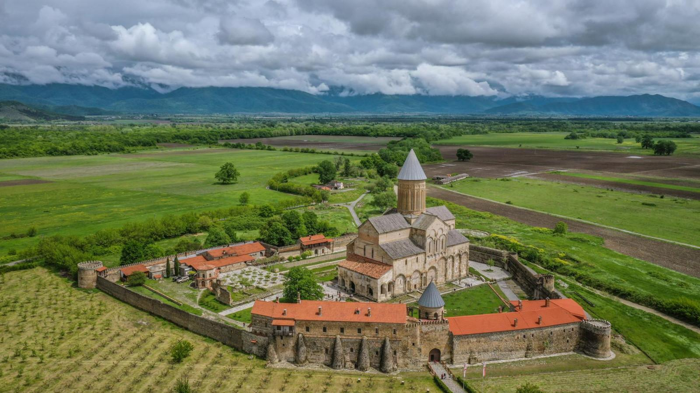იყალთო
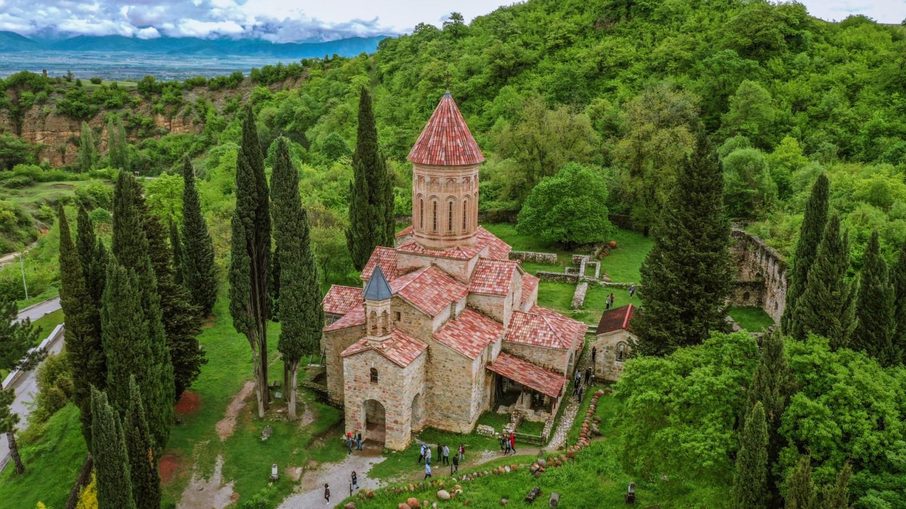ნეკრესი
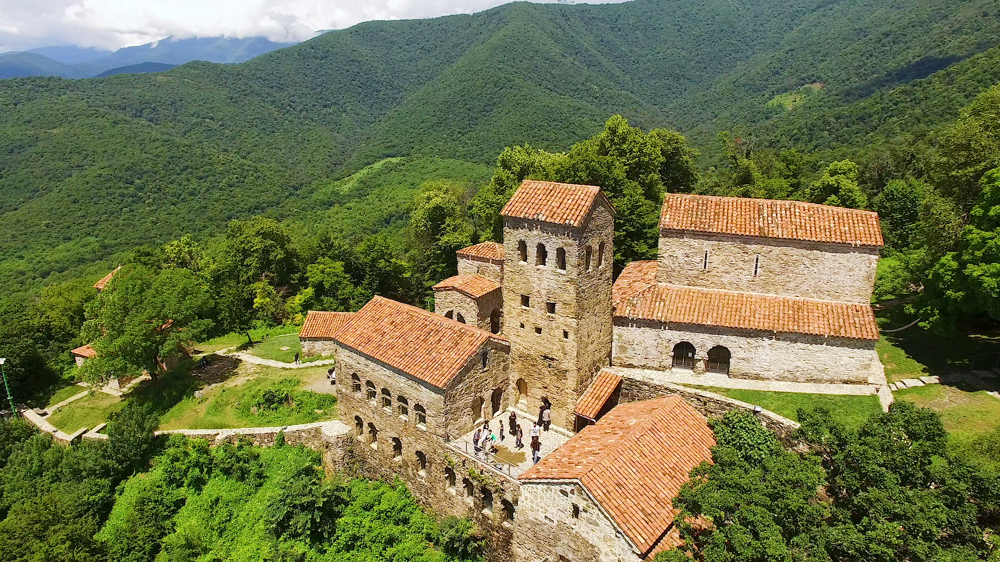ყვარლის ტბა
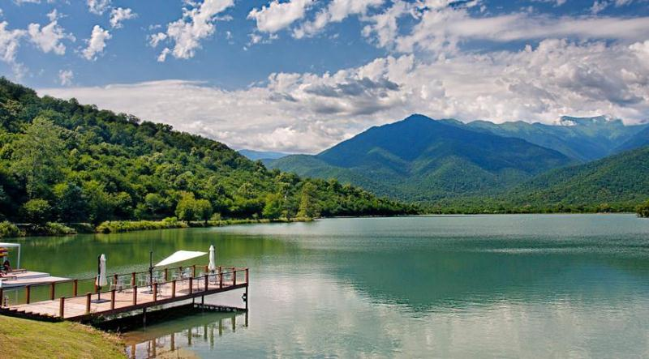ლოპოტას ტბა
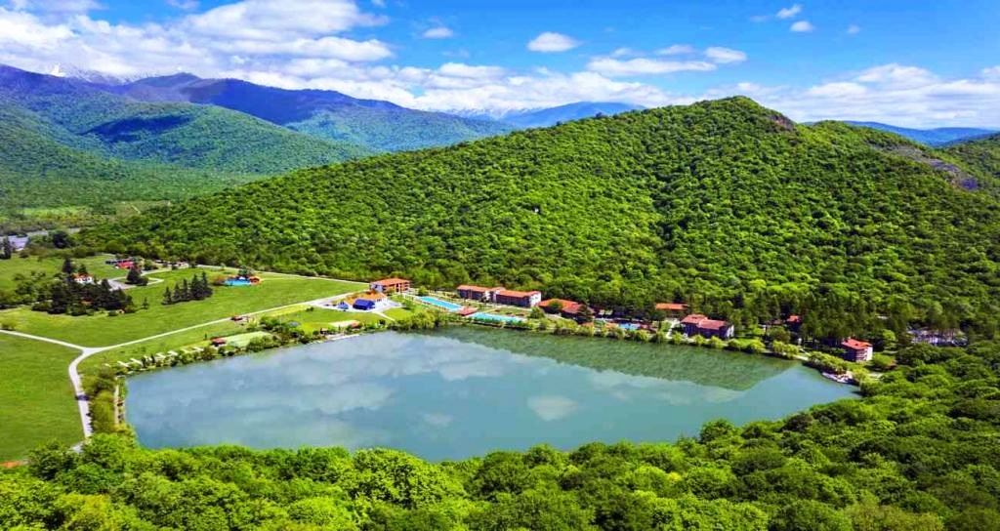ადგილი, სადაც დრო ჩერდება! კავკასიის მთებით გარშემორტყმული ლოპოტას ხეობა იდეალური ადგილია მათთვის, ვინც კომფორტულ დასვენებასა და თავგადასავლებს ეძებს. თბილისიდან ორი საათის გზაზე, კახეთის ისტორიულ რეგიონში თქვენ გელოდებათ ლოპოტა სპა რეზორტი.
კაჭრეთის ამბასადორი
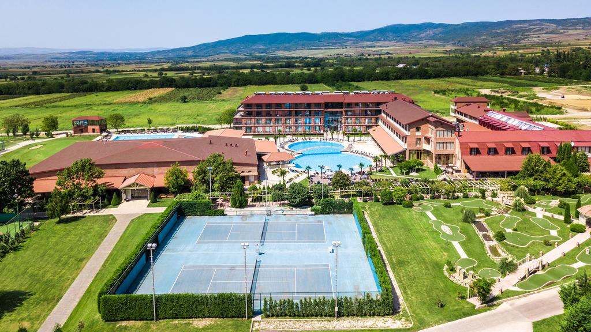ამბასადორი-კაჭრეთი. იგი დედაქალაქ თბილისის საერთაშორისო აეროპორტიდან სულ რაღაც 75 კმ-ის დაშორებით მდებარეობს. განსაკუთრებით აღსანიშნავი კი გოლფის მოედანი, დიდი ჩოგბურთის კორტები, მაგიდის ჩოგბურთი, სავარჯიშო დარბაზი, ბილიარდის მაგიდები და ღია საცურაო აუზია.
თუ ყველაფერი არის სიზმარი,
თუ ბინდის ფერი არის ყოველი,
მაშინ რატომ დგას დღეს მცხეთის ჯვარი,
რატომ დგას ისევ სვეტიცხოველი?
სვეტიცხოვლის ტაძარი
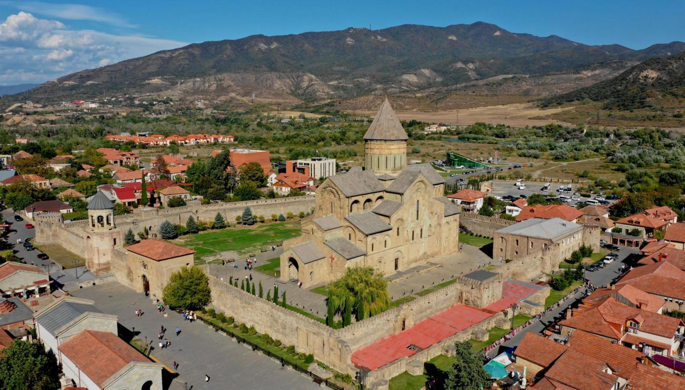სვეტიცხოველი - ქართული კულტურის, ხელოვნებისა და არქიტექტურის უმნიშვნელოვანესი ძეგლი გამოირჩევა არა მხოლოდ თავისი მხატვრული ღირსებით, დიდებულებით და ჰარმონიულობით, არამედ იმ განსაკუთრებული როლითაც, რომელიც მან ქართველი ერის ისტორიაში შეასრულა.
ჯვრის მონასტერი
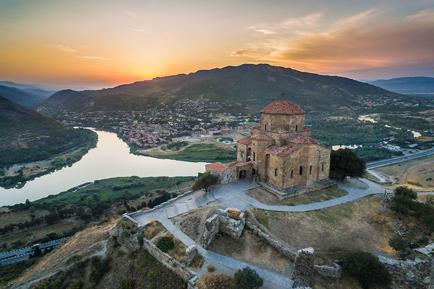მცხეთის ჯვარი ქართული ეროვნული ხუროთმოძღვრების განვითარების მწვერვალია. მიუხედავად იმისა, რომ ეს ტაძარი მცირე ზომისაა, იგი თავის გრანდიოზულობით მაინც აოცებს მნახველებს. აღსანიშნავია ტაძრის მდებარეობა, ეს ადგილი წარმოადგენს მტკვრისა და არაგვის შესაყარს. თუ დავუკვირდებით ეს ადგილი წარმოგვიდგება საქართველოს თითქმის ყველა კუთხის შეყრის ადგილად – სამხრეთ-დასავლეთიდან მდინარე მტკვარის და ჩრდილო-აღმოსავლეთიდან მდინარე არაგვი.
დედათა მონასტერი
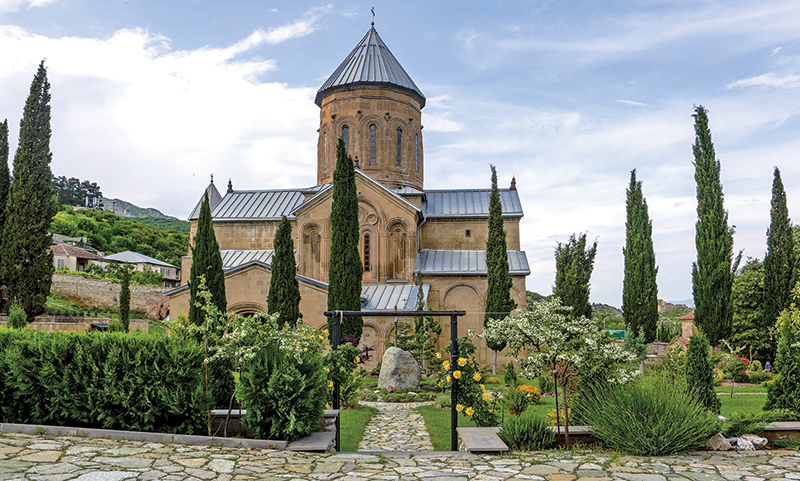სამთავროს წმიდა ნინოს დედათა მონასტერი მდებარეობს საქართველოს უძველეს ქალაქში – მცხეთაში, რომელიც V ს. საქართველოს დედაქალაქი იყო. ამ წმიდა ადგილიდან უქადაგა ქართველ ერს ქრისტეს სჯული მოციქულთასწორმა, კაპადოკიელმა ნეტარმა ქალწულმა ნინომ, სამთავროშივე აიდგა ფეხი ქართულმა ქრისტიანულმა მრწამსმა და თვითშეგნებამ, აქედან მოეფინა ნათელი სრულიად საქართველოს.
ვაგრძელებთ მოგზაურობას საქართველოში . . .
ალავერდი
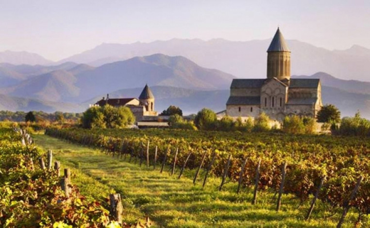თუკი კახეთში არ სვი მანავი
ქართლში ურმული თუ არ გსმენია,
თუ არ მოგხიბლა იმერეთის ცამ,
და ან სვანეთის კლდეთა გენიამ...
მარტვილის კანიონი
დაშბაშის კანიონი
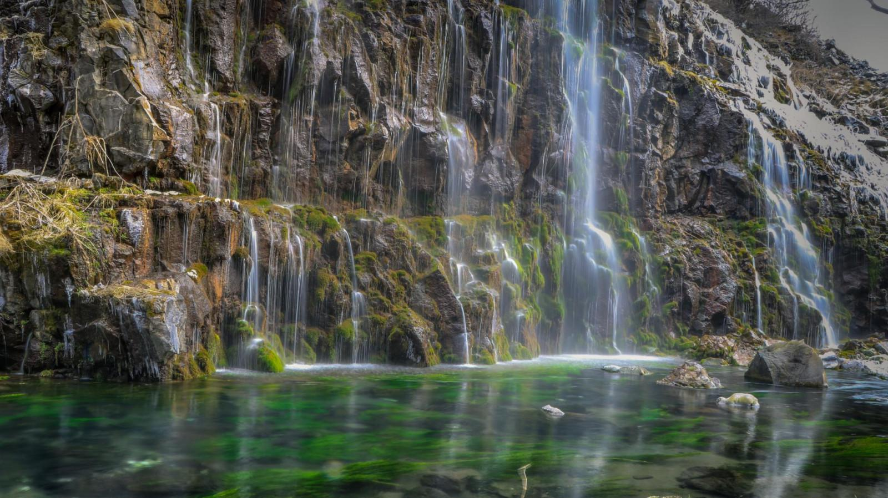თუ აჭარაში არ გყავს ძმაკაცი,
გურიის მთებში თუ არ გივლია,
არ გიტირია სამეგრელოში,
ბროწეულები როცა ტირიან...
ლურჯი ტბა
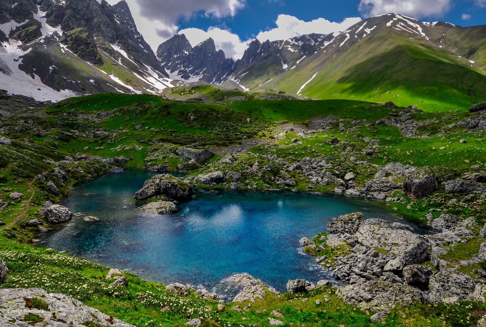ხევსურეთი

თუშეთი
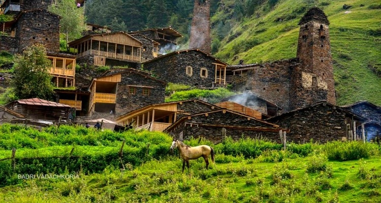თუ თბილისელი ქალები ეშხმა
გული ბოლომდე არ გადახია,
მაშინ ყოფილხარ საქართველოში
და საქართველო არ გინახია....
რაჭული შვეიცარია
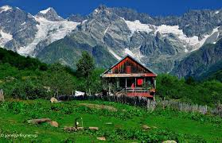შაორის ტბა
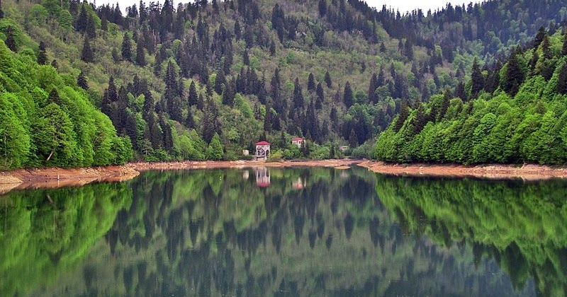კურორტი შოვი
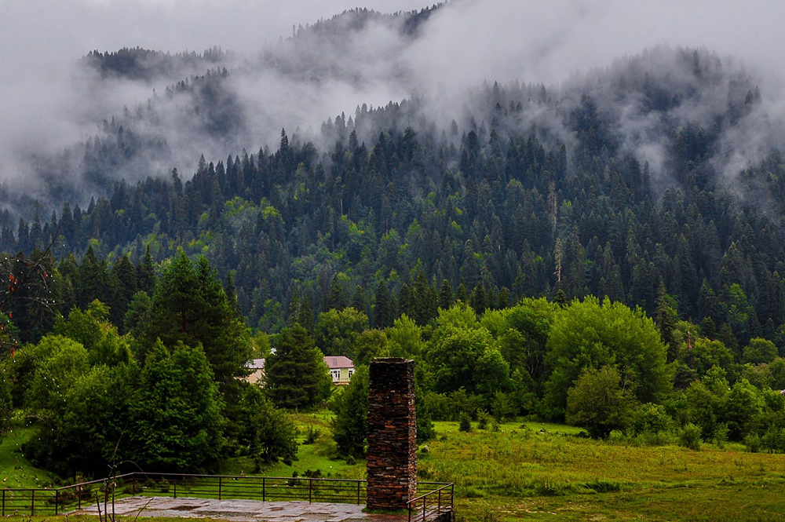უძირო ტბა
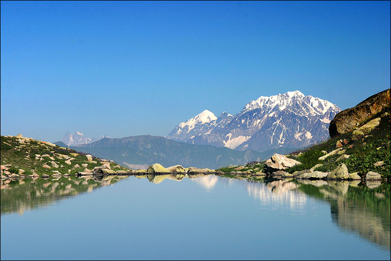ანგელოზის ტბა
შატილი
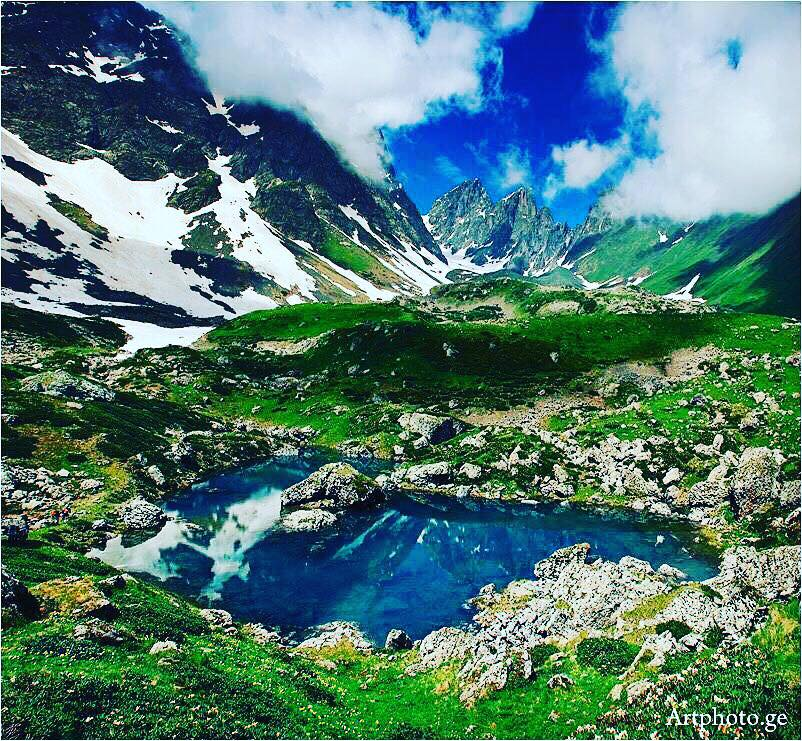მესტია
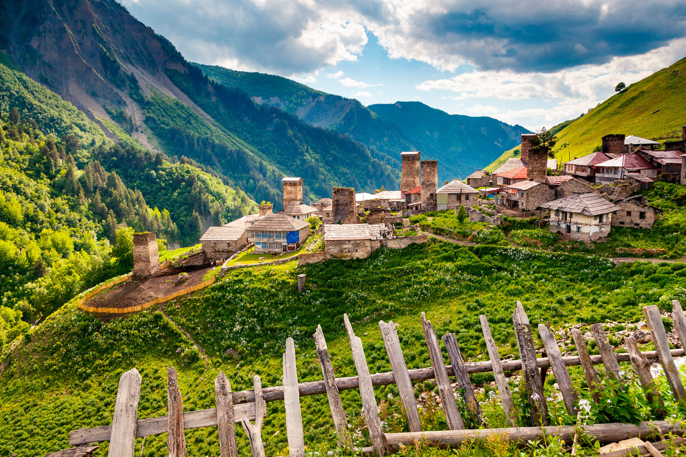სვანური კოშკები
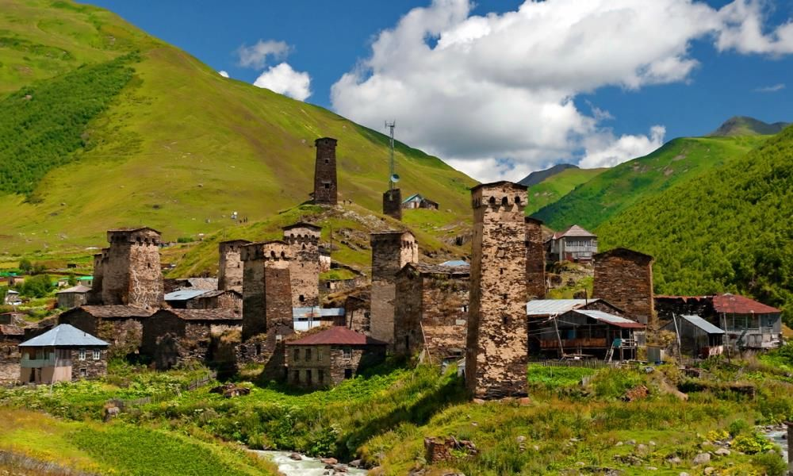უშგული
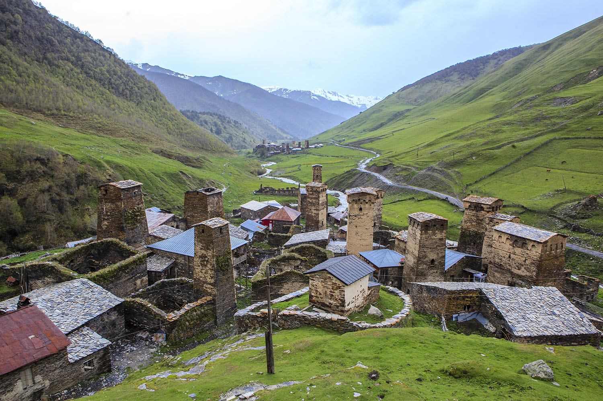არ დაასრულო შენი მოგზაურობა, ისე რომ არ მოინახულო ეს ორი დიდებული ადგილი
გერგეთის სამება
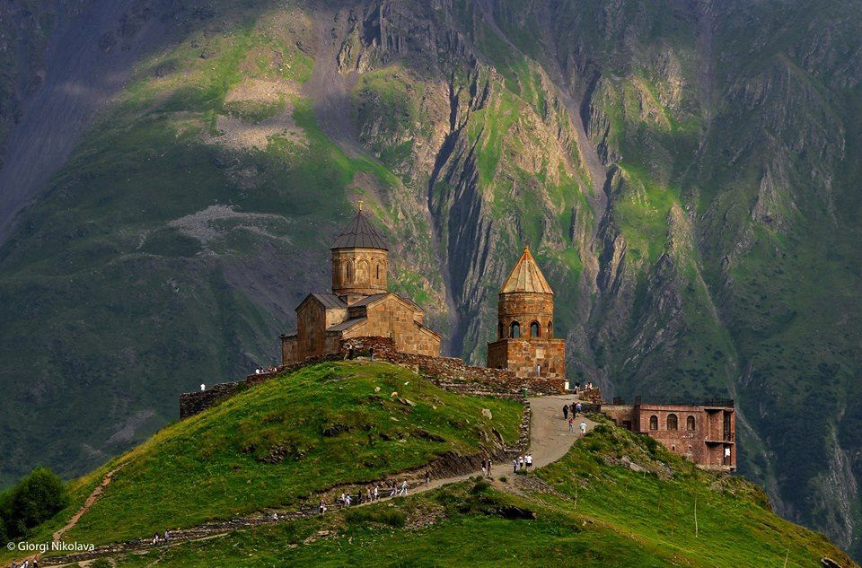გერგეტის ყოვლადწმიდა სამების ტაძარი XIV საუკუნის ძეგლია. ჩვენი ერის სულიერ ცხოვრებაში სამების ტაძარს ყოველთვის განსაკუთრებული მნიშვნელობა ენიჭებოდა. საუკუნეების განმავლობაში ხევის ისტორიაში თითქმის ყველა მნიშვნელოვანი მოვლენა მასთან იყო დაკავშირებული.
ადრე გერგეტის სამების ტაძრის ადგილას, როგორც თეიმურაზ ბაგრატიონის „ივერიის ისტორია“ მოწმობს, მანამდე სამების მთაზე ჯვარი ყოფილა აღმართული. გიორგი ბრწყინვალემ ტაძრის მოვლა-პატრონობა გერგეტელებს დააკისრა, რომლებიც “სამების საყდრისშვილებად”, მის ყმებად ითვლებოდნენ. ამ პატივს გერგეტელებს მომდევნო საუკუნებში საქართველოს სხვა მეფეებიც უმტკიცებდნენ. გერგეტის სამება “მცხეთის სამკაულის” სახიზარს წარმოადგენდა. ხანგრძლივი დროის მანძილზე აქ ესვენა ქართველი ქრისტიანების ერთ-ერთი უწმინდესი რელიკვია – წმინდა ნინოს ჯვარი, რომლის ფლობის პატივს ტაძარი სვეტიცხოველთან და თბილისის სიონთან ერთად ინაწილებდა.
გელათის ტაძარი
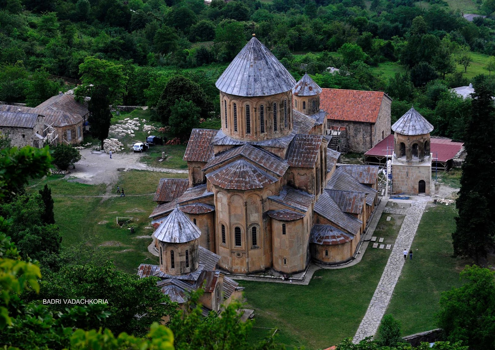სიტყვა “გელათი” უშუალოდ უკავშირდება ბერძნულ სიტყვას „ღენიჰი“ - ანუ „გენა“, რაც ნიშნავს შობას
გელათის ღვთისმშობლის მიძინების ტაძარის შესასვლელში, ანდერძის თანახმად („გალობანი სინანულისანი“) დასაფლავებულია მეფე დავით აღმამშენებელი. ა გრეთვე, აქ არის დასაფლავებული სრულიად საქართველოს თითქმის ყველა მეფე: დემეტრე პირველი, გიორგი მესამე, იმერეთის მეფეები ბაგრატ III, გიორგი II, გიორგი III, გიორგი VI, ალექსანდრე V, სოლომონ I და სხვა.
ამავე ტაძარში, შემონახულია დავით აღმამშენებლის ერთადერთი ფრესკა, რომელსაც ერთ ხელში ეკლესიის მოდელი უჭირავს, ხოლო მეორეში – გრაგნილი.
სად დავისვენო?
ბახმარო
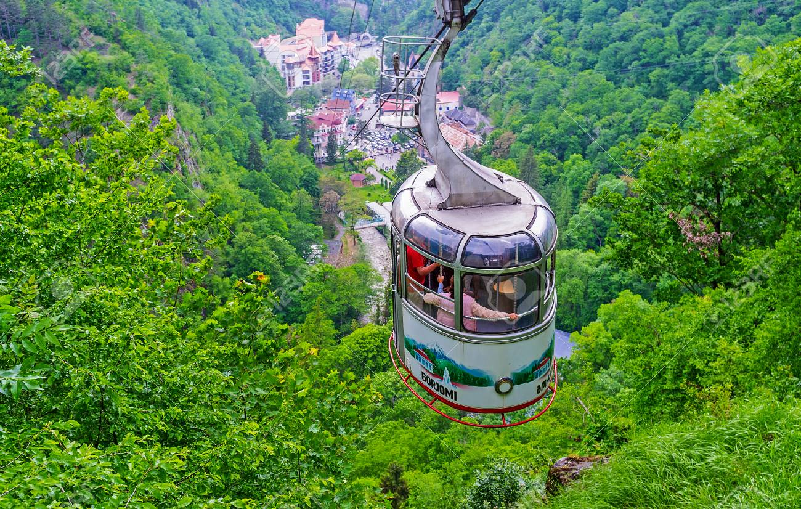ბორჯომი
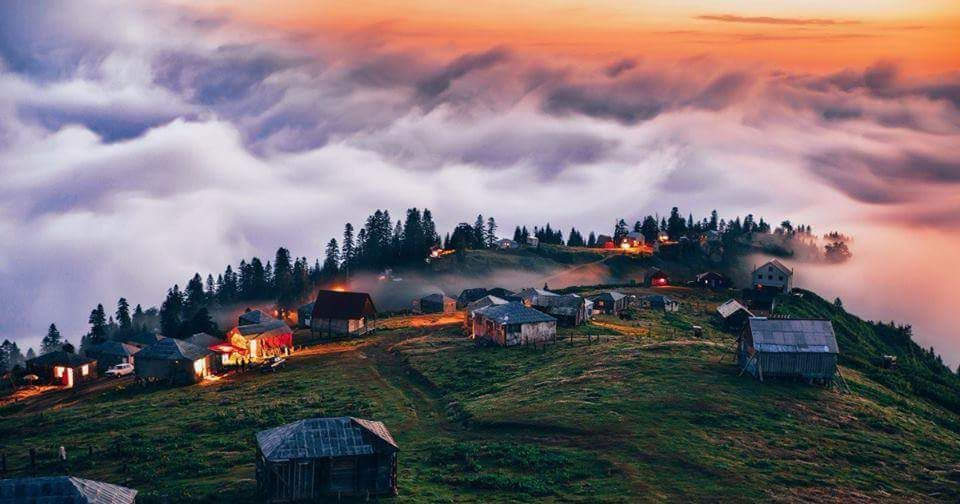მთაში
ზღვაზე
შეკვეთილი
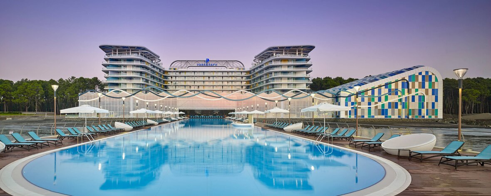ბათუმი
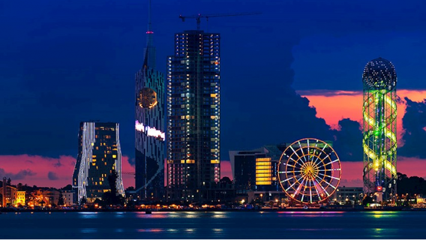